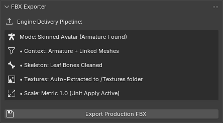

FBX Exporter
The FBX Exporter is the final step in the QXR Asset Toolkit pipeline. Its primary function is to guarantee that the optimized avatar is perfectly packaged and correctly formatted for immediate use in real-time game engines like Unity and Unreal Engine.
Core Features
Exporting directly from Blender can often result in bloated file sizes or broken rig orientations. This module automates the necessary fixes before export:
- Unit Scale Correction: Adjusts the internal metric scaling so the avatar imports seamlessly into engines without requiring an artificial scale factor.
- Automatic Texture Extraction: Instead of embedding textures inside the FBX, the toolkit intelligently unpacks and saves all generated materials into an adjacent
Texturesfolder for a cleaner engine import. - Name Sanitization: Automatically cleans up any duplicated
.001suffixes from Blender's memory before exporting, ensuring clean material and texture names. - Clean Skeleton: Prevents the generation of unnecessary leaf bones, keeping the skeletal hierarchy clean and engine-ready.
Interface & Controls
The FBX Exporter Panel provides a streamlined, one-click solution that adapts to your scene:
- Engine Delivery Pipeline: Displays real-time context about the export, such as whether it detected a "Skinned Avatar" or a "Static Prop". It also confirms the texture extraction folder and scale settings.
- Export Production FBX Button: Triggers a standard file dialogue to define the output directory. The script will generate the
.fbxfile and its companionTexturesfolder in this exact location.

Recommended Workflow
- Ensure you have run the Avatar Setup and Mesh LOD modules.
- Open the FBX Exporter panel in the QXR tab.
- Verify the Engine Delivery Pipeline information on the screen.
- Click Export Production FBX and choose your destination folder.
Your avatar and its linked Textures folder are now ready to be dragged and dropped directly into your Unity or Unreal Engine project!